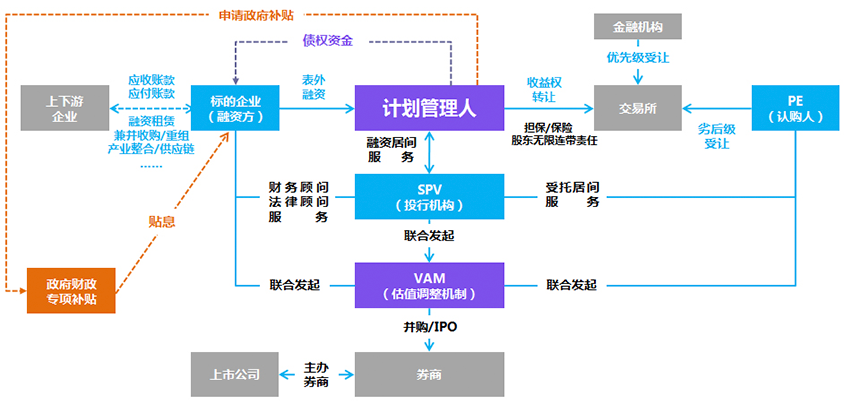

计划概述
在中国古代，龙马（西方称为独角兽）是一种吉祥之物，常常在履行重要使命时才会出现，是稀有且高贵的物种，被视为美好时代的象征。在当前全球创业的思潮下，公司估值超10亿美元的企业也常常被称为独角兽公司。
长期以来独角兽公司得到投资界广泛关注，其融资额也屡次刷新历史最高纪录，创造了一个又一个传奇和神话。但泡沫终会破灭，在全球经济趋缓的大背景下，企业估值遭受腰斩。
在传统企业高度依赖传统PE投资的情况下，独角兽价值企业定向增融计划，旨在通过债股结合的结构性融资提升标的企业资金流动性，获得资金的杠杆收益，且在维护其经营独立性的基础上实现锁定远期战略投资人，让企业估值得到强势增长，蜕变成为独角兽企业。
特殊性与创新性
- 1. 可显著提升企业经营流动性
- 2. 可获得资金的杠杆高收益
- 3. 可提高企业所有权资金的资金回报率
- 4. 可有效降低财务成本
- 5. 可持续保持经营独立性
- 6. 可实现企业估值强势增长
- 7. 可锁定远期战略投资人
债股结合是价值企业融资的必经之路
股权融资发行普通股是公司的永久性资本，是公司正常经营和抵御风险的基础；
主权资本增多有利于增加公司的信用价值，增强公司的信誉，可以为企业发行更多的债权融资提供强有力的支持。
债券融资可以获得资金的杠杆收益，无论企业盈利多少，企业只需要支付给债权人事先约好的利息和到期还本的义务，而且利息可以作为成本费用在税前列支，具有抵税作用；
当企业盈利增加时，企业债权融资可以获得更大的资本杠杆收益，并通过债股结合的结构性融资，更加灵活主动的调整公司的资本结构，使其资本结构趋向合理。
融资方式与交易结构
企业申请标准与要求
公司成立时间在2年及2年以上；
公司在职员工不低于30人；
拥有稳定的上下游客户群，其合作持续2年及2年以上；
公司资产负债率不高于70%；
公司上一年末实收资本不低于500万元；
公司上一年收入不低于500万元或上一年净利润不低于100万 元或年缴税额不低于100万元；
净融资额小于等于公司主营业务收入的20%；
公司没有重大诉讼或者仲裁情况，或没有因涉嫌违规违法行 为正在被有关部门调查或侦查。